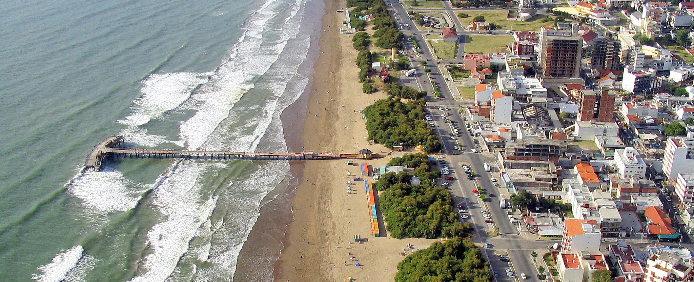

Más de 40 años Juntos
Revivamos los inicios
En Rotisería 3 estamos orgullosos de ser una empresa familiar que, a lo largo de más de cuarenta años, pudo crecer, desarrollarse y mantenerse unida atraves de un sentimiento "Todos nos merecemos lo mejor" Trabajadores que agazajan a los Trabajadores. Nuestro camino comienza en 1982, cuando Don José de profesión "Camionero" junto a Maria "Almacenera" decidieron venir con sus hijas a Santa Teresita. Durante nuestros inicios nos dedicamos a la Fiambrería, donde José traía, quesos, embutidos y delicias de toda la región.